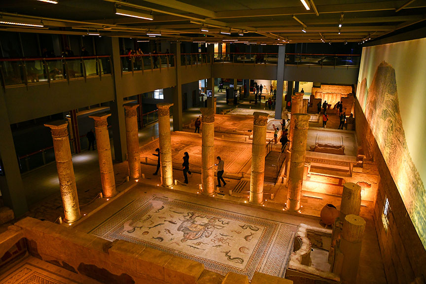
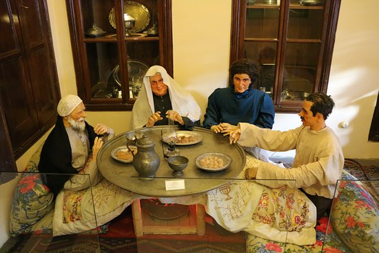
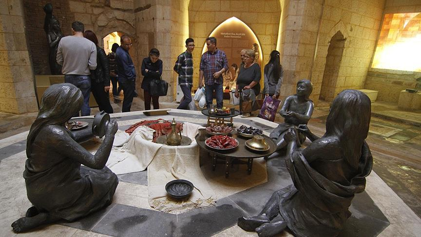
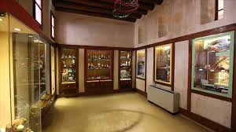

Dünyanın en büyük mozaik müzelerinden biri olan Zeugma, Roma dönemine ait eşsiz eserleri ve Çingene Kızı mozaiğiyle ünlüdür.
Adres: Mithatpaşa Mah. Hacı Sani Konukoğlu Blv. Şehitkamil/Gaziantep
Ziyaret Saatleri: Her gün 08:30 – 17:30
Giriş: Ücretli (Tam: 280 TL) / Müze Kart: Geçerli

Gaziantep’in eşsiz mutfak kültürünü tanıtan müzede geleneksel yemek tarifleri, mutfak araçları ve sunumlar yer alır.
Adres: Şekeroğlu Mah. Hanifioğlu Sok. No: 76, Şahinbey/Gaziantep
Ziyaret Saatleri: Her gün 09:00 – 17:00
Giriş: Ücretli / Müze Kart: Geçerli değil

Tarihi bir Osmanlı hamamının restore edilmesiyle oluşturulan bu müze, hamam kültürünü, geleneklerini ve mimarisini yansıtır.
Adres: Karagöz Mah. Şahinbey/Gaziantep
Ziyaret Saatleri: Her gün 09:00 – 17:00
Giriş: Ücretli / Müze Kart: Geçerli

Geçmişten günümüze çocuk kültürünü yansıtan bu sevimli müzede, Türkiye ve dünyanın dört bir yanından oyuncaklar sergilenir.
Adres: Eyüpoğlu Mah., Hanifioğlu Sok., Şahinbey/Gaziantep
Ziyaret Saatleri: Salı – Pazar 09:00 – 17:00
Giriş: Ücretli / Müze Kart: Geçerli değil